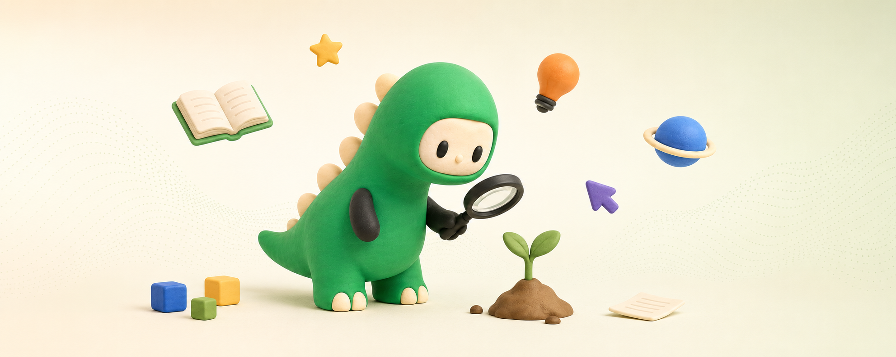

Um blog para respirar
Ideias simples.
Ideias simples.
Curiosidade gigante.
Notas sobre criatividade, tecnologia e as pequenas descobertas que fazem a gente olhar duas vezes.

Últimas ideias
Pouco ruído.
Pouco ruído.
Boas histórias.
Três leituras escolhidas para desacelerar, aprender algo novo e seguir curioso.
Um canto pequeno para ideias grandes.
Sem feed infinito. Sem pressa. Apenas histórias feitas para serem lidas com calma.
Nossa história